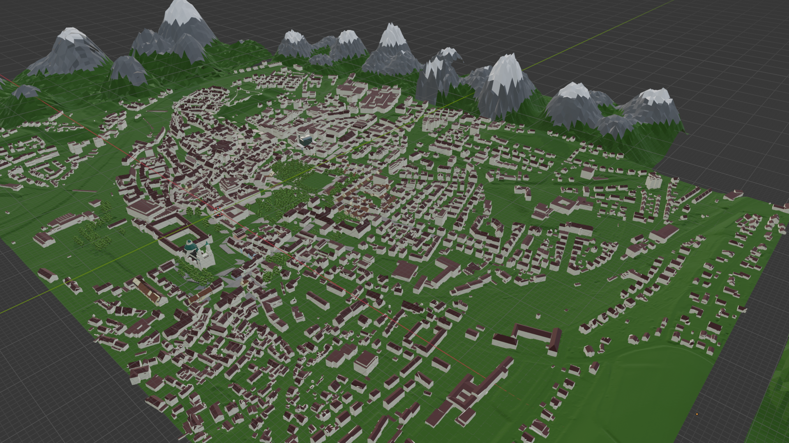
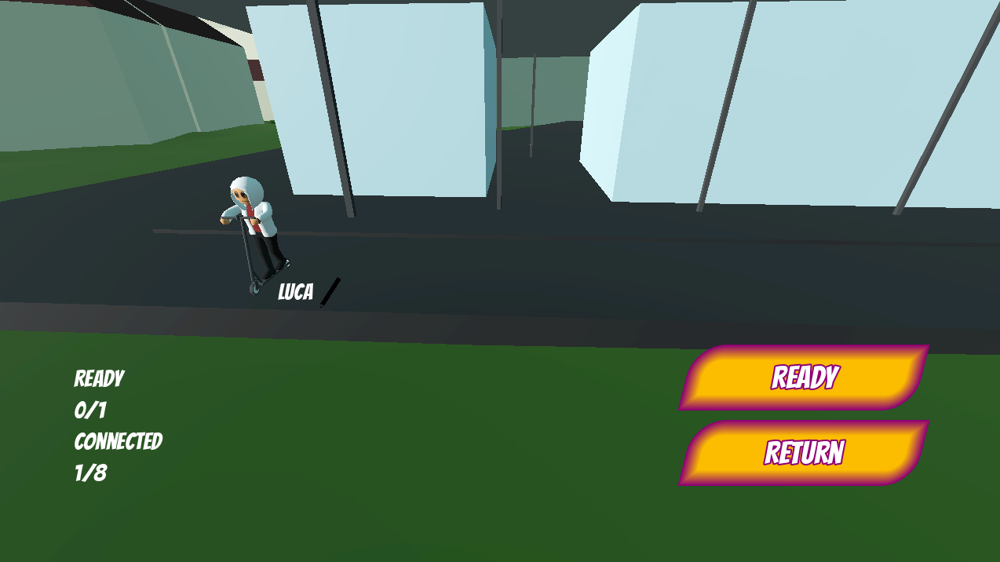
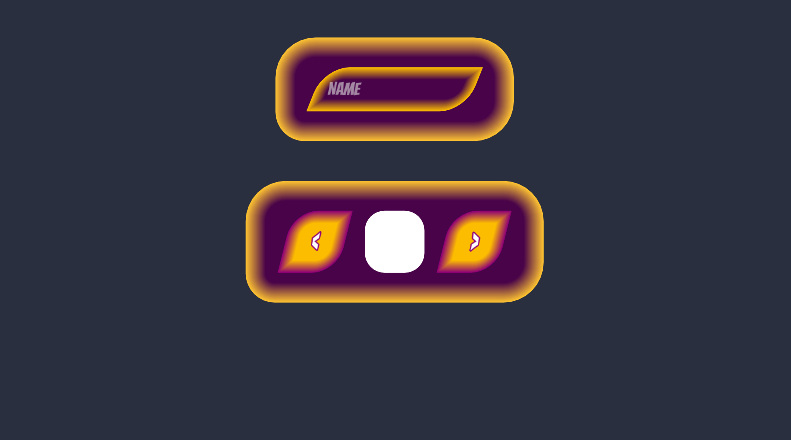
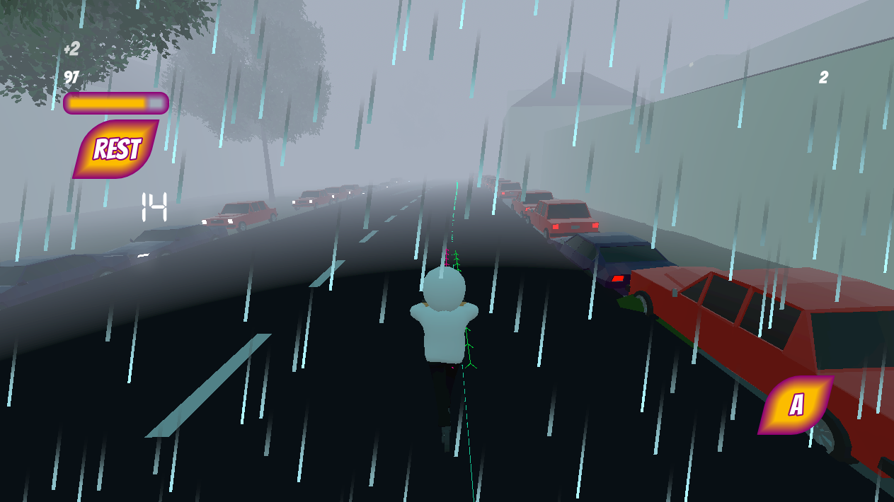

City Scooter
For my masters thesis I was approached by employee of the city of Kempten regarding issues with E-Scooters. Teenagers used the E-Scooters in inappropriate manners, for they rode them with additional people, while looking at their phones or under the influence. Once they stopped riding they left the E-Scooters standing around in the most inconvenient places. So an educational "serious" game was requested to tackle the problem. Within this work I created a Multiplayer System, that allowed for multiple players to connect and play in separat lobbies.





text